{kind=link}
$ whoami > Yuxin Chen — Ph.D. @ UC Berkeley (MSC Lab · BAIR · HIC) > building safe & agile embodied agents for the physical world $ research --focus > whole-body control · dexterous manipulation · human-robot interaction $ research --tools > reinforcement learning · generative models · optimization · control
Hi! I'm a fourth-year Ph.D. candidate at UC Berkeley and a member of BAIR. I'm fortunate to be advised by Prof. Masayoshi Tomizuka, an NAE member, in the MSC Lab.
Before Berkeley, I earned an M.S. in Robotics at the University of Michigan, Ann Arbor, where I worked with Prof. Ram Vasudevan, and a B.S. in Aerospace Engineering under Prof. Ella Atkins. I also hold a B.S. in Mechanical Engineering from Shanghai Jiao Tong University.
During my graduate studies, I've been fortunate to take on research intern roles at NVIDIA, the RAI Institute, and MERL, and to collaborate with Google DeepMind and Sony AI. Earlier, I worked as a software intern at Zoox and ZF.
📰 News
📚 Publications & Preprints
* denotes equal contribution · acceptance rates / award percentages shown
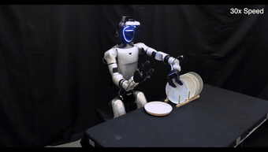
Preprint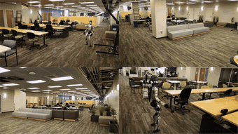
Preprint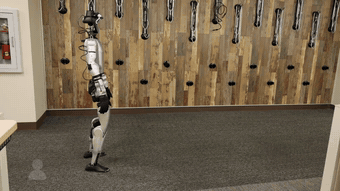
Preprint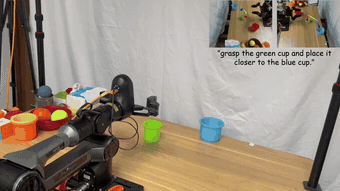
ECCV '26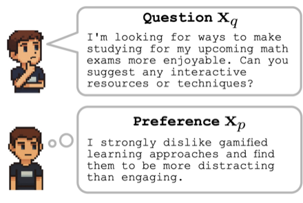
ICML '26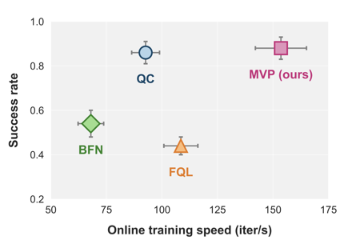
ICLR '26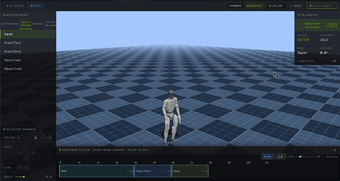
Preprint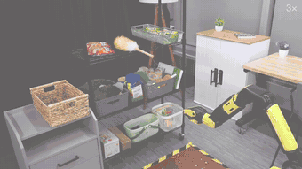
RA-L '26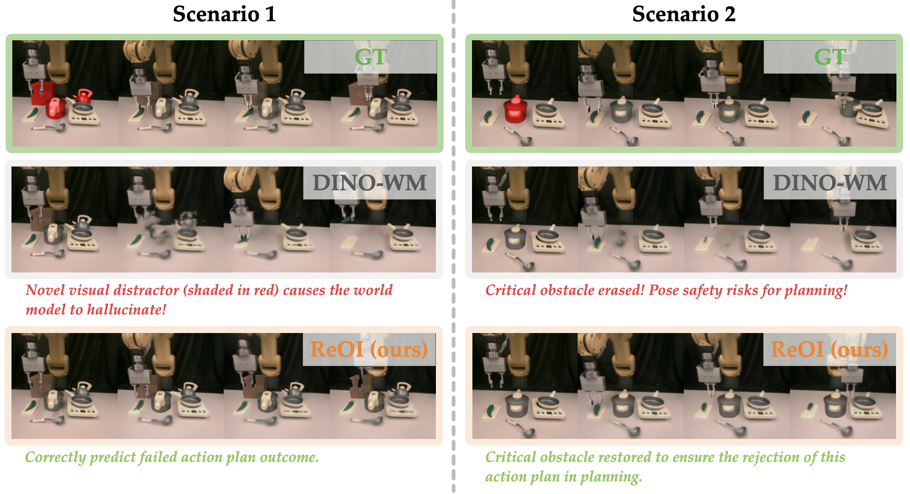
ICRA '26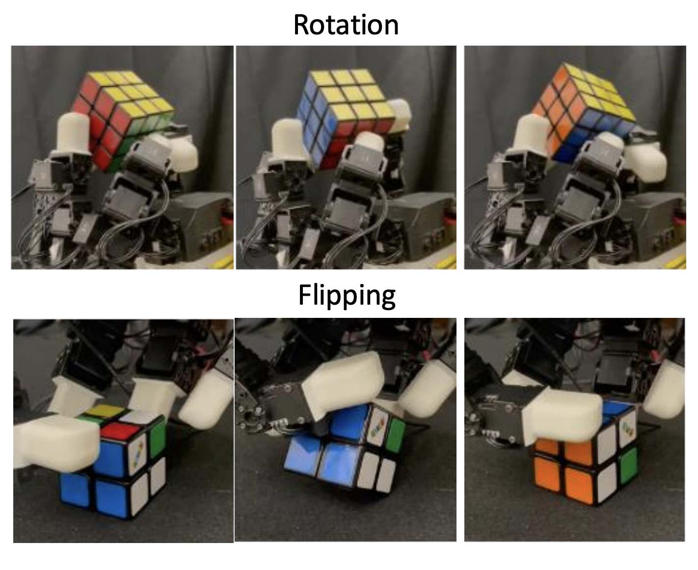
ICRA '26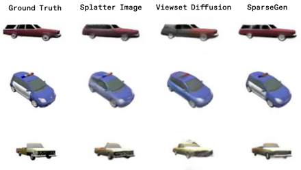
Preprint CoRL '25
CoRL '25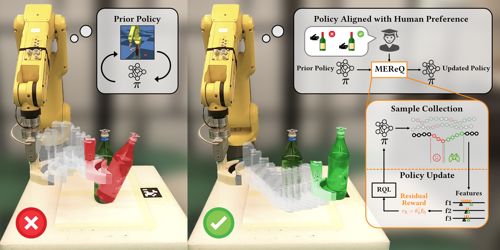
CoRL '25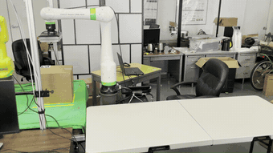
ICRA '25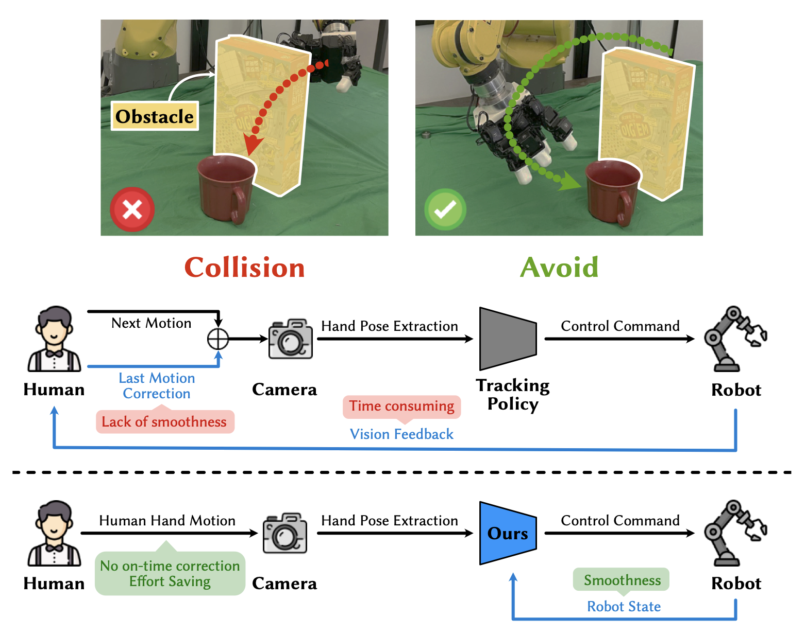
T-MECH '25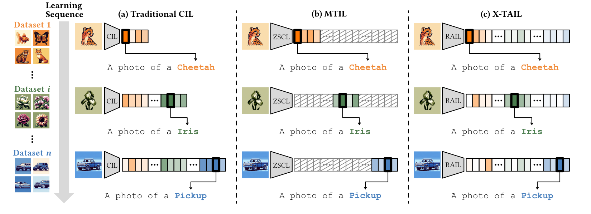
NeurIPS '24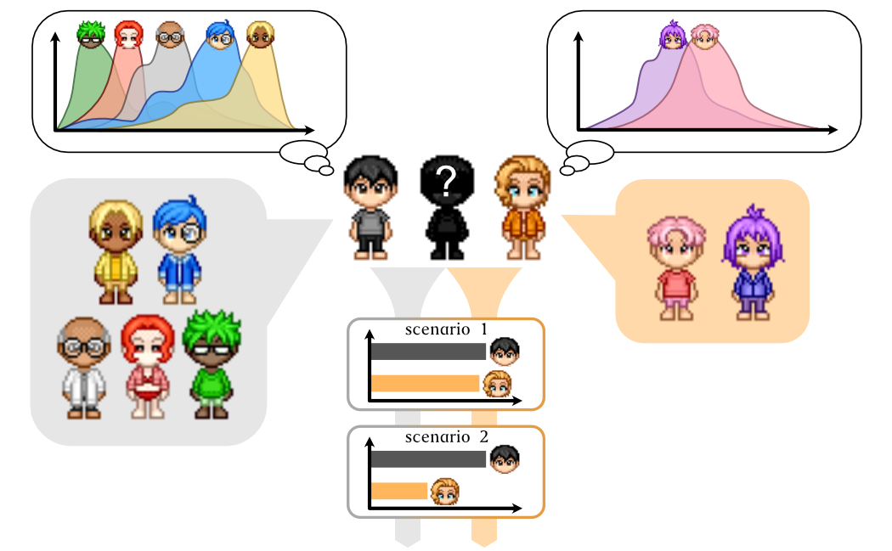
RLC '24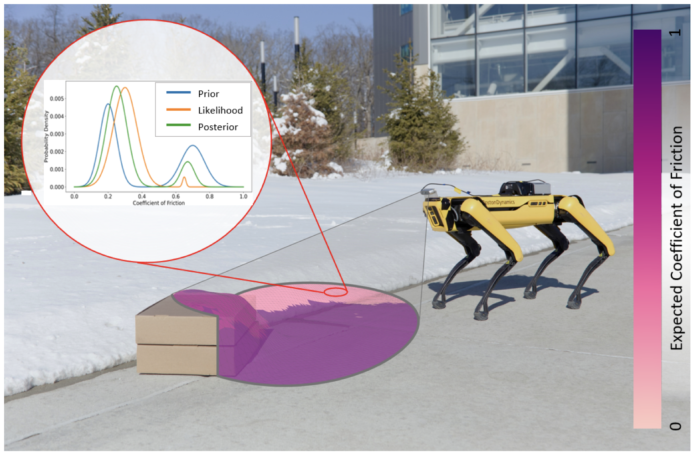
RA-L '22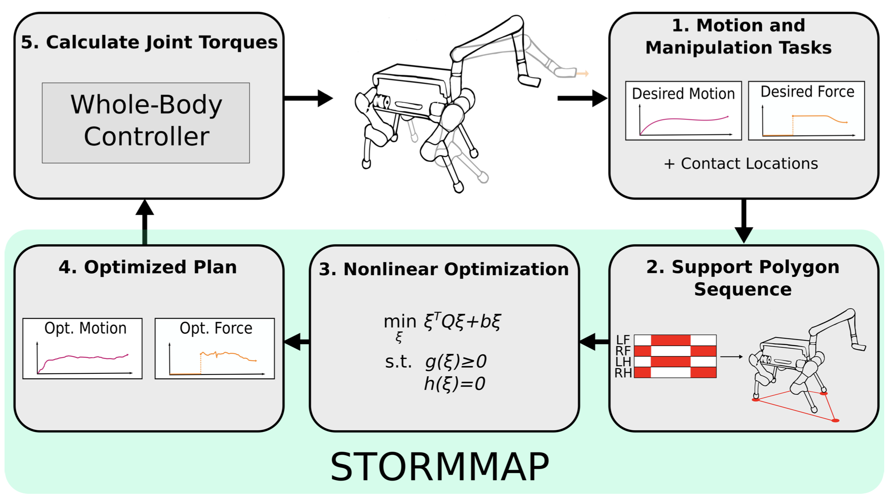
ICRA '21 AIAA '21
AIAA '21